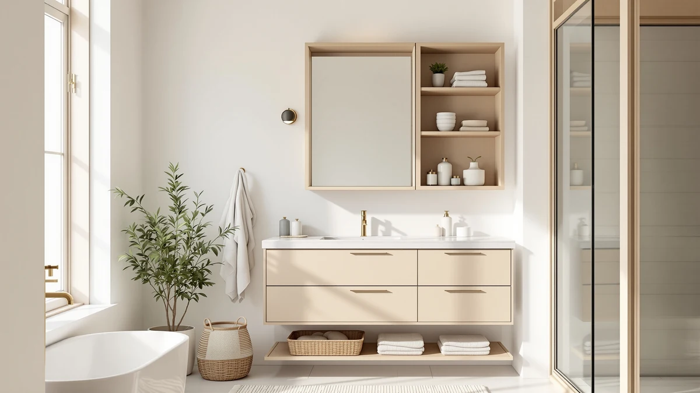

Kohler CB-CLC3026FS Bathroom Medicine Cabinet Review (2026): Worth It?


Quick Answer
The Kohler CB-CLC3026FS bathroom medicine cabinet is the strongest overall pick in this comparison for buyers who want a sturdy metal-and-wood build at 30 x 26 inches, even though it costs $84 to $109 more than the Design House, Ronarda, and Merax alternatives below. If that price gap matters more than extra storage capacity, skip to the alternatives for a cheaper option.
Our pick: Kohler CB-CLC3026FS Bathroom Medicine Cabinet, $255.06 Check Price on Amazon
Bottom line: our top pick is the Kohler CB-CLC3026FS Bathroom Medicine Cabinet with Mirror at $243.47.
Things to Know Before You Buy
- The Kohler CB-CLC3026FS bathroom medicine cabinet measures 30 x 26 inches and uses a metal-and-wood frame, which gives it a larger footprint than compact over-the-toilet units.
- At $255.06, it costs roughly 50 to 75 percent more than the Design House Wyndham, Ronarda, and Merax cabinets covered in the alternatives section.
- Surface-mount and recessed medicine cabinets install differently, and the depth of your wall cavity determines which type actually fits your bathroom.
- Over-the-toilet cabinets like the Ronarda trade mirror placement for extra shelving above the tank, which helps more in small bathrooms than in larger ones.
- Check current Amazon pricing before buying, since affiliate prices shift and the gap between the Kohler and its budget competitors can narrow or widen from week to week.
This Kohler CB-CLC3026FS bathroom medicine cabinet review compares its price, dimensions, and material against three other wall-mounted storage cabinets to see whether it earns a spot in your bathroom or whether a cheaper alternative covers the same ground. At $255.06, Kohler prices it well above budget options like the Merax and the Ronarda over-the-toilet cabinet, both under $170. We weighed the metal-and-wood build and 30 x 26 inch frame against the competitors' listed dimensions and current Amazon pricing to see where the extra cost goes. For shoppers who want one well-built medicine cabinet instead of a modular storage stack, the Kohler is worth a closer look.
Medicine cabinets span a crowded category, from plastic-and-glass units under $50 to designer pieces that run several hundred dollars. We looked at where the Kohler CB-CLC3026FS lands in that spread, what its metal-and-wood construction gets you compared with the lighter Design House Wyndham cabinet, and whether the over-the-toilet and budget wall-mounted alternatives fit a smaller bathroom better. Each section below weighs the Kohler against its three closest competitors on price, build, and fit for different bathroom layouts.
Why You Should Trust Us
Ilane Tall researches bathroom storage products for Best Bathroom Storage, comparing spec sheets, manufacturer listings, and patterns in verified Amazon owner reviews rather than running a testing lab. This Kohler CB-CLC3026FS bathroom medicine cabinet review draws on the current Amazon price, the dimensions and materials Kohler lists, and the same research approach applied to the Design House, Ronarda, and Merax alternatives. We do not run a fake testing lab, and we do not claim to have installed or lived with any of the cabinets covered here. Every price and spec cited below comes directly from the product listing at the time of publication.
How We Compared
Our research process for this Kohler CB-CLC3026FS bathroom medicine cabinet review started with the manufacturer's listed dimensions, material, and price, then moved to a side-by-side read of the three closest competing cabinets on Amazon. We compared the metal-and-wood construction against the Design House Wyndham's listed build, checked how the 30 x 26 inch frame stacks up against the Merax's 35 x 29 inch footprint, and tracked current pricing across all four listings. We also read through patterns in verified owner reviews on each product page, looking for recurring notes about hardware, finish, or sizing rather than one-off comments. We excluded cabinets without clear, current pricing or verifiable owner feedback on their listing from this comparison.
Overview & Specs

Kohler CB-CLC3026FS Bathroom Medicine Cabinet
What we like
- Metal-and-wood construction built for a heavier daily load than the lighter alternatives
- 30 x 26 inch size gives more interior storage than the over-the-toilet and narrower wall-mounted options we compared
- Kohler backs the cabinet with an established brand and widely available replacement hardware
Flaws but not dealbreakers
- At $255.06, it costs well above the Design House, Ronarda, and Merax alternatives
- The larger frame needs more wall space than a compact over-the-toilet cabinet
- The metal-and-wood build adds weight, so plan for a stud or wall anchor before mounting it
| Material | Metal / wood |
| Size | 30 in. x 26 in. |
Kohler builds the CB-CLC3026FS bathroom medicine cabinet around a 30 x 26 inch metal-and-wood frame, which puts it closer to a furniture-grade storage piece than a basic mirror box. At $255.06, that's a real step up from the three alternatives in this comparison, and the listed materials explain part of that gap. Metal-and-wood construction typically holds up better under repeated door use and bathroom humidity than the lighter builds found on cheaper cabinets, and it carries more weight on interior shelves without flexing. For a primary bathroom where the cabinet opens multiple times a day, that build matters more than it does in a half-bath that sees occasional use.
Kohler is a recognizable name in bathroom fixtures, and that carries weight when you compare a $255 cabinet against less familiar brands like Ronarda or Merax. Brand recognition alone does not guarantee better performance, but it usually means easier access to replacement hardware and a company that has sold medicine cabinets at scale for years. The tradeoff is price: buyers who want the largest interior storage and the sturdiest build in this comparison will likely find the Kohler CB-CLC3026FS justifies its cost, while buyers with a tighter budget or a smaller bathroom may get more value from one of the cabinets in the alternatives section below.
What We Liked
The biggest strength of the Kohler CB-CLC3026FS bathroom medicine cabinet is its size. At 30 x 26 inches, it holds noticeably more than the narrower wall-mounted options in this comparison, which matters once you are storing more than a few bottles and a razor. The metal-and-wood build also reads as more durable on paper than the lighter alternatives, especially for a cabinet that gets opened and closed daily. Kohler's standing in bathroom fixtures means parts and support stay easier to track down years after purchase, which is not always true of newer or less established cabinet brands. For a primary bathroom that needs real storage capacity rather than a token mirror box, that combination of extra space, sturdier build, and easy parts access is where the higher price pays off.
What Could Be Better
Price is the clearest drawback of the Kohler CB-CLC3026FS bathroom medicine cabinet. At $255.06, it costs $84 more than the Design House Wyndham, $85 more than the Ronarda over-the-toilet cabinet, and $109 more than the Merax, and none of those alternatives falls far behind on core function. The larger 30 x 26 inch frame also demands more wall space, which can be a real constraint in a smaller bathroom where every inch around the sink counts. Buyers should confirm their wall structure can support a metal-and-wood cabinet of this size before mounting it, since heavier builds need secure anchoring rather than a few drywall screws.
Who Is It For?
The Kohler CB-CLC3026FS bathroom medicine cabinet fits buyers who treat the medicine cabinet as a long-term fixture rather than a disposable accessory, typically in a primary bathroom with daily use and enough wall space for a 30 x 26 inch frame. If you want the sturdiest build and the most interior storage in this comparison and the budget allows for it, this is the pick. It fits less well in a small bathroom, a rental, or a budget under $200, where the Merax or Ronarda alternatives cover similar basic function for considerably less money.
Homeowners planning to stay in a house for years tend to get more out of the Kohler's higher price than renters or buyers mid-way through a short-term flip. A landlord outfitting several bathrooms on a budget will likely find the Design House or Merax cabinets a better fit across multiple units, since the savings compound quickly when you are buying more than one.
Alternatives to Consider
If the Kohler CB-CLC3026FS bathroom medicine cabinet costs more than your bathroom or your budget needs, these three alternatives cover different priorities. The Design House Wyndham keeps the standard wall-mounted format at $170.60, about $85 less than the Kohler, for buyers who do not need the heavier metal-and-wood build. The Ronarda over-the-toilet cabinet skips the vanity wall entirely at $169.99, which helps in a small bathroom that cannot spare 30 x 26 inches of space near the sink. The Merax undercuts all three at $145.99 while offering a larger 35 x 29 inch frame, making it the pick for buyers who want more storage and a lower price, even if its listing does not confirm the same metal-and-wood construction as the Kohler.

Also Great
Design House Wyndham Bathroom Medicine
A lighter-duty wall-mounted cabinet at $170.60, about $85 less than the Kohler, for buyers who want a standard medicine cabinet without paying for the heavier metal-and-wood build.
$170.60
Check Price on Amazon
Also Great
Over the Toilet Storage Cabinet
Mounts above the toilet instead of over the sink, which makes it the better choice for small bathrooms that cannot spare 30 x 26 inches of wall space near the vanity.
$169.99
Check Price on Amazon
Best Value
Merax 35" x 29" Wall
The lowest price in this comparison at $145.99, with a larger 35 x 29 inch frame than the Kohler despite costing $109 less.
$145.99
Check Price on AmazonFrequently Asked Questions
Is the Kohler CB-CLC3026FS bathroom medicine cabinet worth $255?
For a primary bathroom with daily use, the metal-and-wood build and 30 x 26 inch storage capacity make the price easier to justify than it looks at first glance. The Kohler's case for its cost rests on durability and brand support rather than extra features, compared with the lower-priced Design House, Ronarda, and Merax alternatives.
How does the Kohler CB-CLC3026FS compare to the Merax 35 x 29 inch medicine cabinet?
The Merax is both larger, at 35 x 29 inches versus the Kohler's 30 x 26 inches, and cheaper, at $145.99 versus $255.06. The Kohler's metal-and-wood construction is the main tradeoff buyers pay for, since the Merax listing does not advertise the same build.
Should a small bathroom use an over-the-toilet cabinet instead of a wall-mounted one?
If your vanity wall does not have 30 x 26 inches of clear space, an over-the-toilet cabinet like the Ronarda uses space that would otherwise go unused. A wall-mounted option like the Kohler CB-CLC3026FS bathroom medicine cabinet makes more sense when you have room beside or above the sink and want the mirror positioned there instead.
Final Verdict
This Kohler CB-CLC3026FS bathroom medicine cabinet review comes down to a straightforward tradeoff between price and build quality. If you want the sturdiest, largest-capacity cabinet in this comparison and the $255.06 price fits your budget, Kohler earns the pick. If you are working with a smaller bathroom or a tighter budget, the Merax, Design House, or Ronarda alternatives cover the same basic function for considerably less money. For buyers who prioritize durability over the lowest price, Kohler is the brand worth paying more for here.